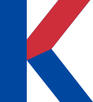
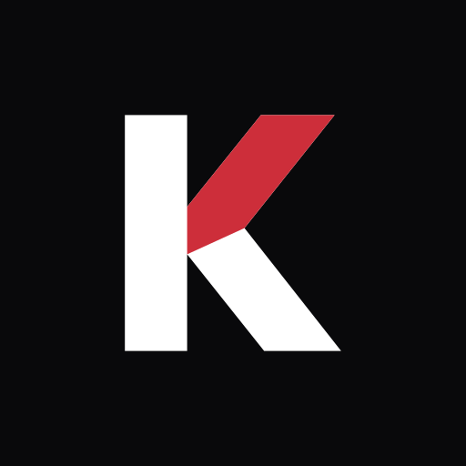

간격의 기본 단위
8 · 16 · 24 · 32 · 48 · 64 · 96px.
세부 조정에는 4px을 사용합니다. 콘텐츠 최대 너비는 1120px입니다.
필요한 사실만 증명하세요.
Prove what matters.
00 / The idea
KProof는 한국 모바일 신분증을 바탕으로, 서비스에 필요한 조건을 증명합니다. 브랜드도 같은 원칙을 따릅니다. 전달할 정보는 선명하게, 장식은 필요한 만큼만.
KProof는 Korean Proof의 줄임말입니다. 적·청색 K와 굵은 워드마크를 중심으로, 넓은 여백과 분명한 정보 위계를 사용합니다.
01 / Identity
공식 표기는 KProof, 한글로는 케이프루프입니다. 로고 안에서는 대문자 KPROOF를 사용합니다.


워드마크 높이 H의 ¼ 이상을 사방에 확보합니다. 심벌에도 같은 비율을 적용합니다.
워드마크 최소 너비 88px, 심벌 최소 높이 16px. 그보다 좁은 공간에는 워드마크 대신 K 심벌을 씁니다.
비율, 글자 간격, K의 적색 획을 바꾸지 않습니다. 그림자나 외곽선을 추가하지 않고, 단색 인쇄에는 제공된 흑백 버전을 사용합니다.
사진이나 복잡한 패턴 위에서는 단색 면을 먼저 확보합니다. 파랑·빨강 로고는 흰색 바탕, 반전 로고는 검정 바탕을 권장합니다.
02 / Color
흰색과 검정이 화면의 바탕을 만들고, 파랑이 주요 동작과 증명을 이끕니다. 빨강은 K의 획과 강조 지점에만 사용합니다.
본문 Ink #161619 · 보조 문구 #62626E
어두운 배경 본문 #FFFFFF · 보조 문구 #BFC1CE
상태를 색상만으로 구분하지 않습니다. 확인 결과에는 텍스트와 기호를 함께 표시합니다. 위 색상은 화면용 sRGB 기준이며, 인쇄 시에는 별도 교정이 필요합니다.
색상을 누르면 HEX 코드를 복사할 수 있습니다.
03 / Typography
국문과 영문 모두 Pretendard Variable을 사용합니다. 굵기는 의미에 따라, 크기는 읽는 순서에 따라 조절합니다.
필요한 사실만
증명하세요.
Prove what matters.
Aa 가 / Regular 430
Aa 가 / Medium 550
Aa 가 / Semibold 650
Aa 가 / Headline 680
짧은 제목, 충분한 행간, 자연스러운 줄바꿈.
자간은 제목 −0.04em, 본문 −0.018em을 기준으로 합니다.
| 역할 | 데스크톱 | 모바일 | 행간 |
|---|---|---|---|
| 메인 제목 | 44–68px | 34–40px | 1.22 |
| 섹션 제목 | 38–56px | 32–38px | 1.28 |
| 주요 설명 | 21–24px | 20px | 1.70 |
| 본문 | 20px | 18px | 1.65 |
| 라벨 / 보조 안내 | 17 / 16px | 16 / 15px | 1.50 / 1.65 |
화면의 용도에 따라 일부 크기는 조정합니다. 라이선스는 SIL Open Font License 1.1이며, 브랜드 킷에 폰트 파일과 원문을 포함했습니다.
04 / Layout & motion
8 · 16 · 24 · 32 · 48 · 64 · 96px.
세부 조정에는 4px을 사용합니다. 콘텐츠 최대 너비는 1120px입니다.
4px은 작은 요소, 12px은 배지와 연결 흐름, 24px은 앱 화면에 사용합니다. 주요 버튼은 캡슐 형태를 유지합니다.
버튼은 200ms, 섹션 진입은 800ms. 스크롤 연출은 해당 요소가 보이는 시점에 맞추고 역방향 스크롤도 지원합니다.
Ambient curves
기존 곡선을 낮은 농도로 겹쳐 깊이를 만듭니다. 적색 18초, 청색 23초의 순환을 사용하며, 화면 밖에서는 정지합니다. ‘움직임 줄이기’ 설정에서는 정적인 상태를 표시합니다.
05 / Voice
짧고 명확하게 설명합니다. 기술의 이름보다 사용자가 무엇을 증명하고, 무엇을 전달하는지 먼저 말합니다.
필요한 사실만 증명하세요.
Prove what matters.
한국 모바일 신분증으로 연령과 이용 자격을 증명합니다. 서비스에는 확인에 필요한 결과만 전달합니다.
출시 상태와 지원 범위는 분명하게 표시합니다. ‘완벽한 보안’, ‘모든 서비스에서 사용’처럼 검증되지 않은 표현은 사용하지 않습니다.
06 / Assets
벡터 로고, 앱 아이콘, 공유 이미지 템플릿과 디자인 토큰. 전체 킷에는 오프라인으로 열 수 있는 이 가이드도 포함되어 있습니다.
SVG 14개 · 폰트 · CSS / JSON · 오프라인 가이드
KProof를 소개하는 자료에 사용하세요. 로고를 변형하거나 정부·제휴사의 공식 인증으로 오인될 수 있는 방식으로 사용하지 않습니다. 공유 이미지의 문구는 편집 가능한 텍스트이며, 내보낼 때 Pretendard를 적용하세요. 앱 아이콘은 플랫폼별 제출 규격에 맞게 변환해야 합니다.